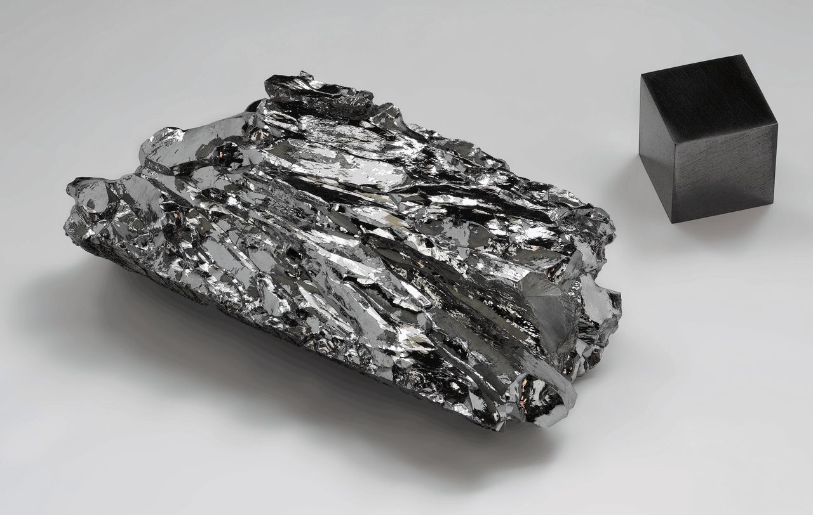
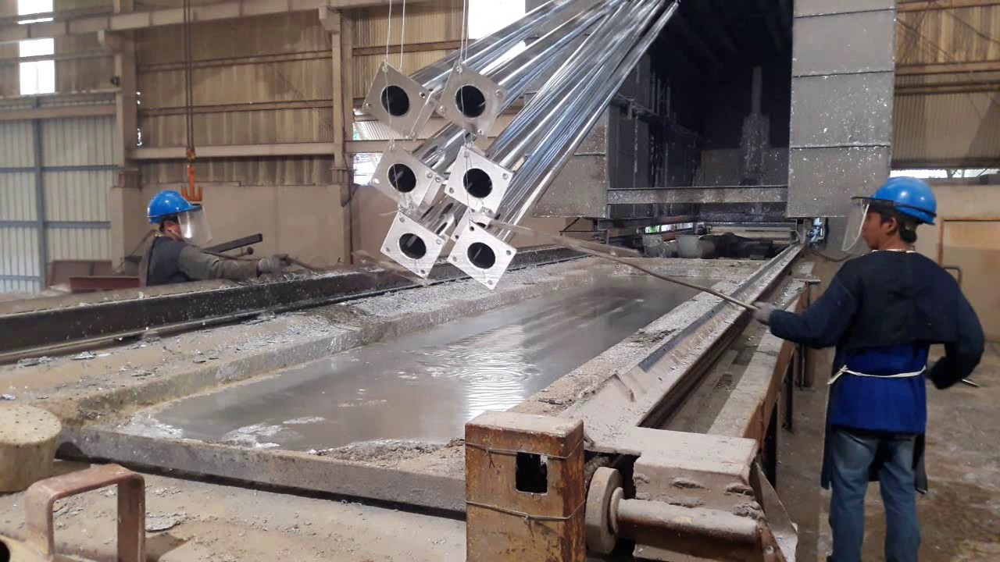
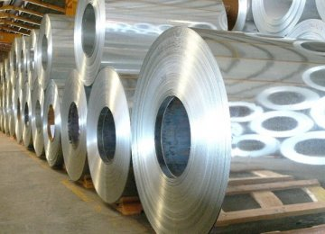
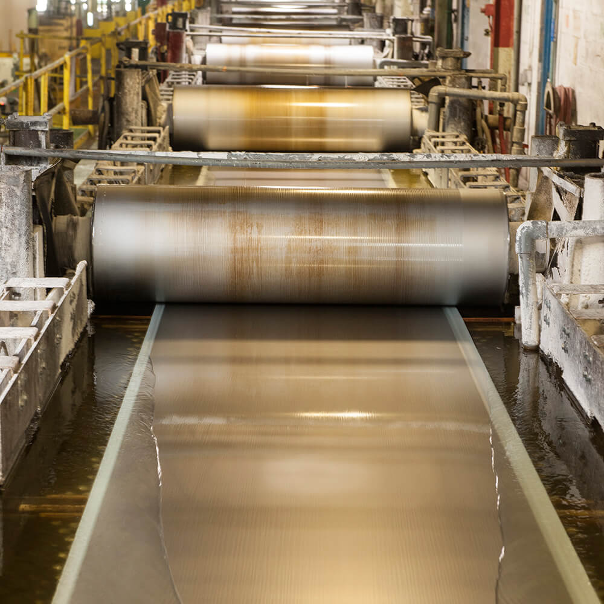
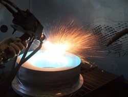
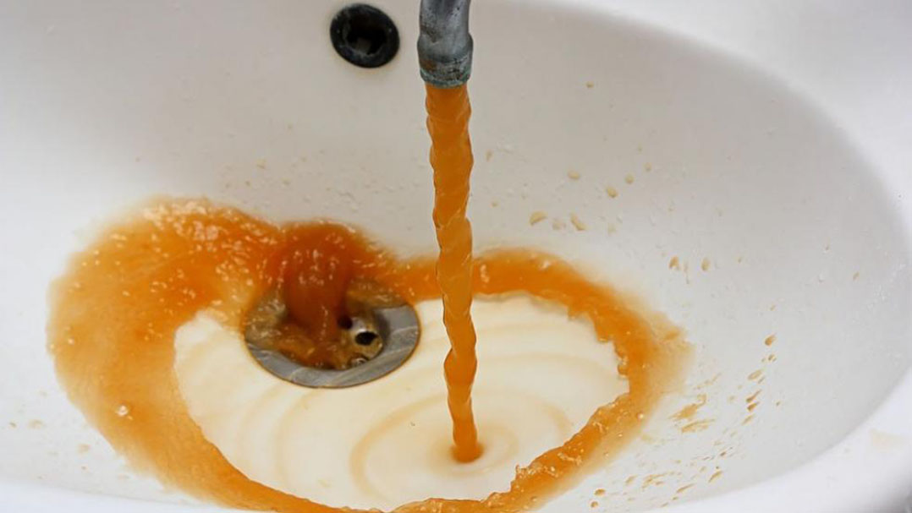
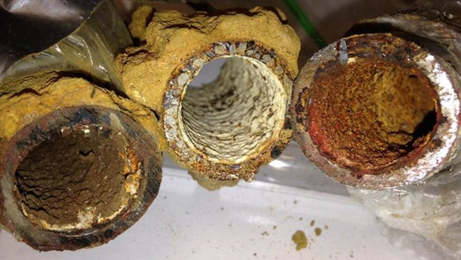
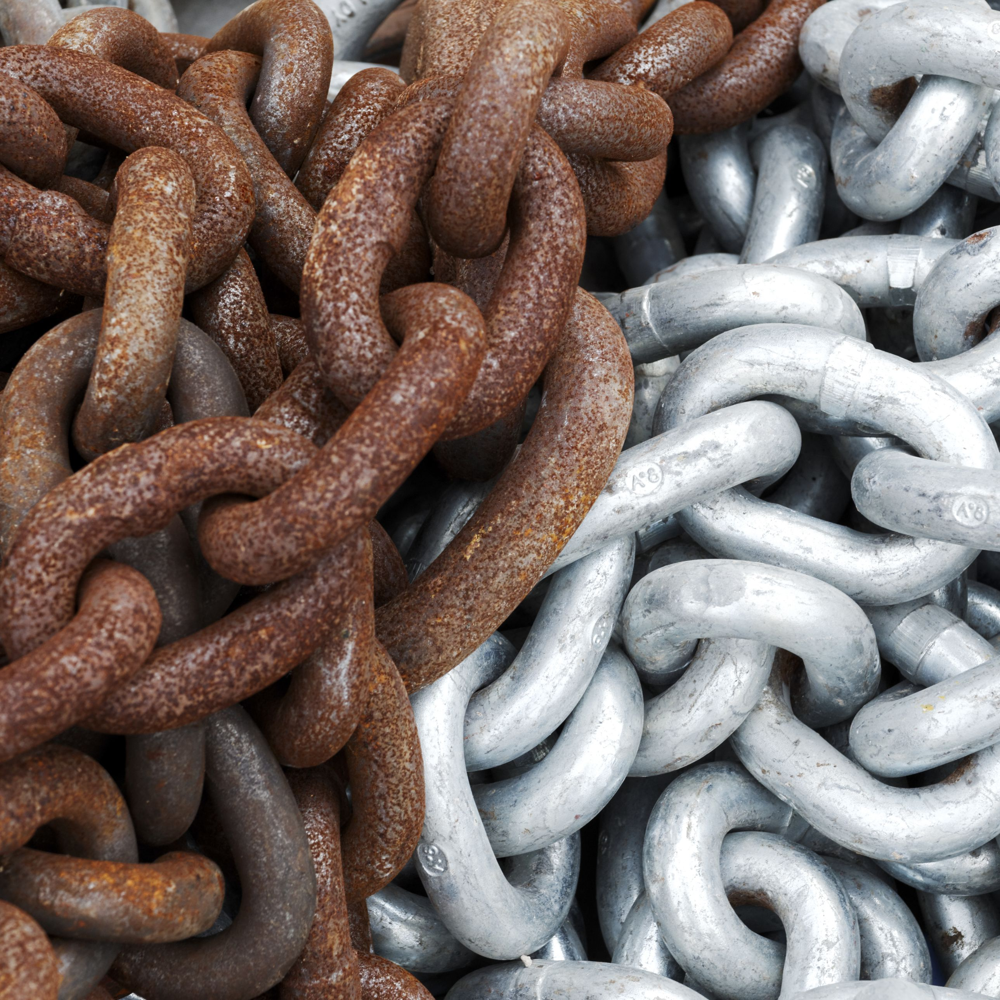
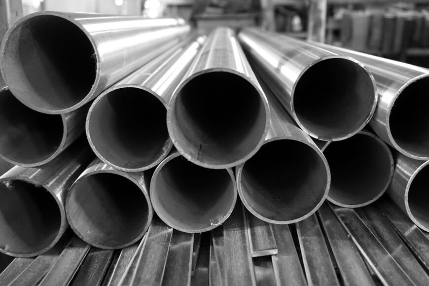

What is galvanizing?
Galvanizing is a method used to protect metal (steel or iron) from corrosion by coating it with a thin layer of zinc.
When metals are not galvanized, it reacts with the surrounding environment and corrode; this weakens the metal.
By galvanizing, the zinc applied to the metal act as a barrier to prevent it from corroding.
Many types of galvanizing methods are used in the industry and each method has its advantages.

Types of galvanizing
Hot-dip Galvanizing
The metals are cleaned and "dipped" into molten zinc to apply the zinc layer.
This method allows complete protection because the metal is submerged in zinc.
It allows objects ranging from small to large to be galvanized in one or more operations.

Pre-galvanizing
A specific shape of metal are cleaned and pass through molten zinc.
This method allows the metal to be evenly coated.
But when the metal is cut, the base metal is exposed and become vulnurable; therefore, this is the downside of pre-galvanizing

Electrogalvanizing
Zinc ions are transferred to the metal using electrical current in an electrolyte solution.
This allows the metal to be uniformly coated with zinc to the same thickness.
However, the coating is thinner which results in less protection compared to other methods.

Metallizing
The process of applying zinc to the metal using a heat gun filled with zinc.
The loaded zinc are melted and sprayed onto the metal and can be accomplished through combustion or compressed air,
but the metal may not be coated evenly.

Societal Benefits
Longer life span
Galvanized coating will have life expetancy of 50+ years in rural area
and 20 to 25 year plus in urban or costal areas.
Lightpoles, pipes, and metal beams uses galvanizing to last for decades.
Lightpoles, pipes, and metal beams uses galvanizing to last for decades.

Less maintenance
The zinc coating provides metal with strong resistance to abrasion and water which means
that it will less likely to corrode. This results the metal to be used reliability for a long time.
Metal parts and gears are galvanized to withstand harsh weather conditions that contribute to rusting and corroding.
Metal parts and gears are galvanized to withstand harsh weather conditions that contribute to rusting and corroding.
Saves Money
The United States spent 350 billion dollars are spent replacing the corroded steel.
By galvanzing, it will save a lot of repair cost. This applies to daily items too.
Gardening tools are in constant need of maintenance. Metals are coated with zinc to prevent equipment from breaking or hurting the gardener while prevent rusting from the moisture in the soil and plants.
Gardening tools are in constant need of maintenance. Metals are coated with zinc to prevent equipment from breaking or hurting the gardener while prevent rusting from the moisture in the soil and plants.
Concerns
Environmental
Areas near industrial plants can
have higher levels of zinc in the
water supply. This raise acid levels and affect nearby wildlife.
If the waste is not cleaned up properly, the water near the industry can be contaminated
Cut through galvanized water pipes could corrode from the ripped zinc layer and release lead into the water supply
If the waste is not cleaned up properly, the water near the industry can be contaminated
Cut through galvanized water pipes could corrode from the ripped zinc layer and release lead into the water supply
Health & Safety
Zinc level in food, air, water, and soil is unusually high in the work area.
This high level of zinc puts people's health at risk;
the effects include stomach cramps, skin irritation, nausea and vomiting, for extreme level, it can damage internal organs.
Hot-dip and sherardizing (zinc dust) involve molten solutions, posing risks to workers
Exposure zinc oxide or magnesium oxide fumes can cause metal fume fever, and the consequent effect includes raised temperature, chills, aches, pains, nausea, dizziness.
Hot-dip and sherardizing (zinc dust) involve molten solutions, posing risks to workers
Exposure zinc oxide or magnesium oxide fumes can cause metal fume fever, and the consequent effect includes raised temperature, chills, aches, pains, nausea, dizziness.


Formation of rust


Iron + Oxygen → Rust
4Fe + 3O2 → 2Fe2O3
Oxidation Half Reaction
Fe → Fe2+ + 2e-
Reduction Half Reaction
O2
+ 2e-
→
O2
Iron + Oxygen + Water → Rust
4Fe + 3O2 + 6H2O →
4Fe(OH)3
Oxidation Half Reaction
Fe → Fe2+ + 2e-
Reduction Half Reaction
O2
+ 4H+
+ 4e-
→
2H2O
More Examples
Sacrificial Protection
Iron + Oxygen → Rust
4Fe + 3O2 →
2Fe2O3
Iron (III) Oxide + Zinc → Zinc Oxide + Iron
Fe2O3 (s) + 3Zn(s) →
3ZnO(s) + 2Fe(s)
Strips of zinc on the steel/iron bar.
Zn will react with O2 preferentially over the iron as it is more reactive, and the iron will not rust.
Even if the oxygen reacts with iron to create iron(III) oxide, it can then react with zinc in a single displacement reaction to produce back iron and zinc oxide. Zinc oxide is still very hard and will not affect the structure of the bar.
Zn will react with O2 preferentially over the iron as it is more reactive, and the iron will not rust.
Even if the oxygen reacts with iron to create iron(III) oxide, it can then react with zinc in a single displacement reaction to produce back iron and zinc oxide. Zinc oxide is still very hard and will not affect the structure of the bar.
Others
Iron nails and nuts are a common object to be galvanized. Because they hold the structure together, they are constantly exposed to oxygen and water, which undergoes redox reaction and loses structural integrity. So they are galvanized to prevent that.
Steel frames of the building are also galvanized. Just like the nails and nuts, the steel frames are also constantly exposed to water and oxygen. They require structural integrity to hold the building up for a very long period of time. So by galvanizing, the steel’s lifespan can be prolonged.
Steel frames of the building are also galvanized. Just like the nails and nuts, the steel frames are also constantly exposed to water and oxygen. They require structural integrity to hold the building up for a very long period of time. So by galvanizing, the steel’s lifespan can be prolonged.
Relation to electrochemistry & Oxidation-reduction reaction
Galvanizing is a method to protect metal from undergoing redox reaction with oxygen that causes corrosion. The zinc coating protects corrosive substances from reaching the underlying iron and causes corrosion. It deals with the transfer of electrons and the reactions of it, which is what we learned in electrochemistry.
When irons are exposed to oxygen, the irons oxidizes by transferring electrons to oxygen. Which then makes oxygen the oxidizing agent and iron the reducing agent. Water and electrolyte accelerates this process. This creates iron oxide, also known as rust. By galvanizing, the zinc layer prevents oxygen and water from reacting with the iron, but instead, it reacts with zinc, forming zinc oxide. The zinc oxide acts as a protective layer that prevents the iron from redox reactions.
When irons are exposed to oxygen, the irons oxidizes by transferring electrons to oxygen. Which then makes oxygen the oxidizing agent and iron the reducing agent. Water and electrolyte accelerates this process. This creates iron oxide, also known as rust. By galvanizing, the zinc layer prevents oxygen and water from reacting with the iron, but instead, it reacts with zinc, forming zinc oxide. The zinc oxide acts as a protective layer that prevents the iron from redox reactions.
Due to galvanic corrosion, the zinc coating will corrode in
place of the iron because it would be the anode of the two
electrodes; iron would be the cathode. With an electrolyte
present, it will create a galvanic cell and a redox reaction
where the zinc anode oxidizes into Zn
2+(aq) and provides
electrons for the reduction of Fe2+(aq) to pure iron. Iron
will not have any tendency to oxidize anymore because
zinc has a lower standard electrode potential
EoZn
= –0.76 V
compared to
EoFe
= –0.44 V
This means that iron
will stay safe in its pure form with zinc sacrificing itself to
do so.